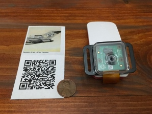
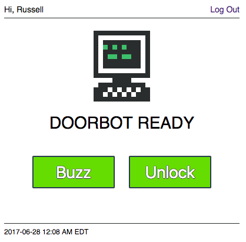
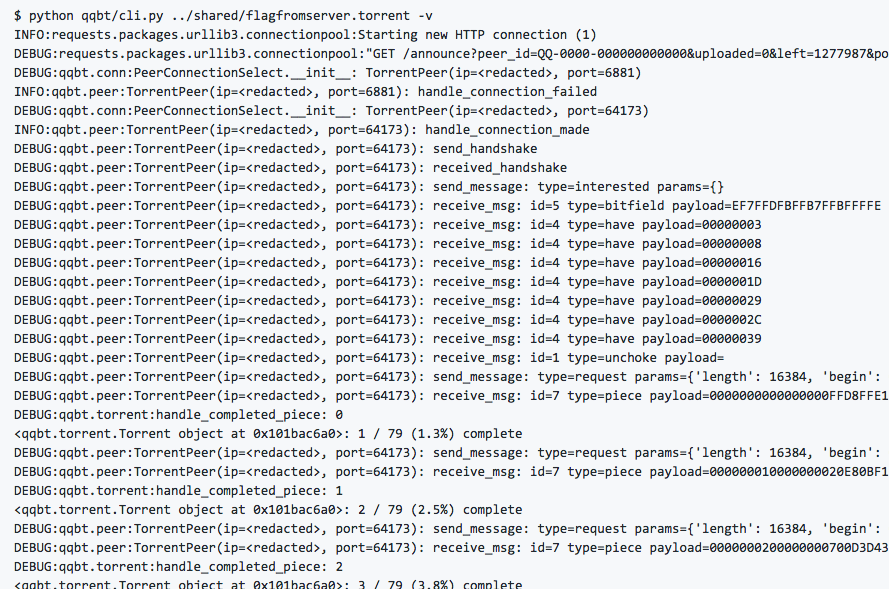
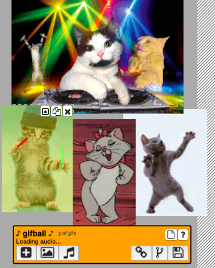
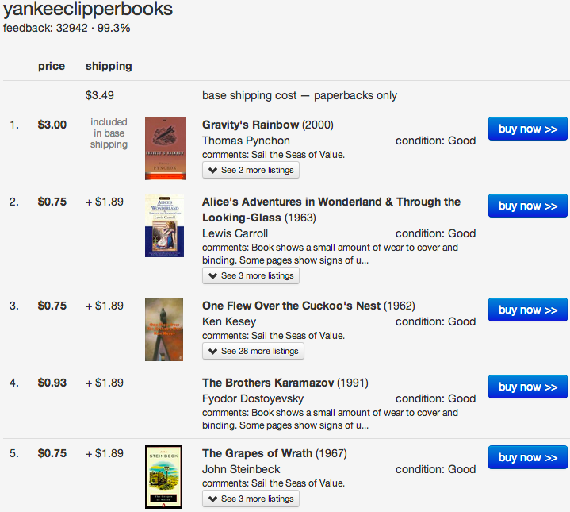
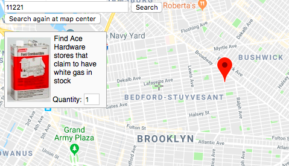
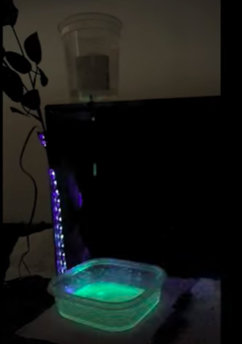
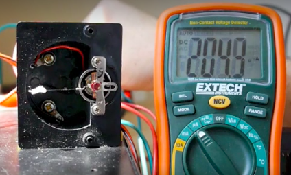
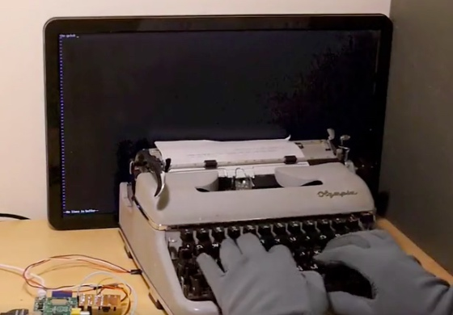
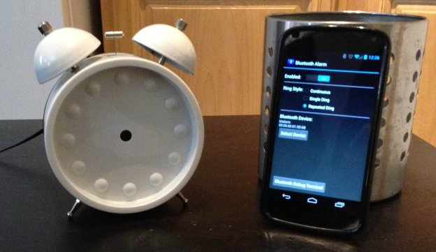

A miniature milk crate filled with Spotify albums.
A QR code music player.
An Internet-connected door unlocker for a community space.
A toy BitTorrent client.
Gifs, synced to music. [UNMAINTAINED]
Buy a stack of books from a single half.com seller to optimize shipping costs. [DEFUNCT]
Show stores with Coleman camping fuel in stock. [DEFUNCT]
Strobe UV LEDs to freeze time.
Proof spirits using a panel meter as an electrobalance.
Detect keypresses from a typewriter using a SoftPot position sensor.
Bell-ringer alarm clock controlled by an Android phone.
I want to see the president, when it comes time to sign a bill, even if the bill may be necessary, to recognize—instead of being proud of every piece of legislation that’s passed—to recognize that it represents a failure of our collective social nature. And, instead of giving away all these pens with fanfare, he should light a stick of incense and say, “My fellow Americans, it is with deep regret that I must announce to you that, because we could not solve this problem on our own, we have had to enact another piece of legislation. Let us pray we can recover our senses and repeal it as soon as possible.”Dale Pendell
Only a crisis—actual or perceived—produces real change. When that crisis occurs, the actions that are taken depend on the ideas that are lying around. That, I believe, is our basic function: to develop alternatives to existing policies, to keep them alive and available until the politically impossible becomes the politically inevitable.Milton Friedman
With a big enough wave, nothing is sacrosanct, which is simply to say that everything is more or less fluid — the hotter the temperature (the more significant the disruption wave) the more “solid” stuff will be liquefied. We can and should certainly talk about the more and less solid aspects of our culture. Fashion is notoriously fluid. Mathematics has proven quite solid. But it’s all just a matter of temperature.Jordan Hall
What are the psychological antecedents to global prosperity?Tom Chi
“Well, in our country,” said Alice, still panting a little, “you’d generally get to somewhere else—if you ran very fast for a long time, as we’ve been doing.”Lewis Carroll
“A slow sort of country!” said the Queen. “Now, here, you see, it takes all the running you can do, to keep in the same place. If you want to get somewhere else, you must run at least twice as fast as that!”
So when they say we’re a cult, we reply that it’s a self-service cult. You wash your own brain.Larry Harvey
I used to think that every eventful thing that happened in my life would feel as good as moving to New York City did, that my life would be like moving to New York, over and over and over again. I know now that as with falling in love, you're lucky if it happens to you even once.Chloe Caldwell
Tiger got to hunt,Kurt Vonnegut
Bird got to fly;
Man got to sit and wonder, “Why, why, why?”
Tiger got to sleep,
Bird got to land;
Man got to tell himself he understand.
Achaan Chaa looked down and smiled faintly. He picked up the glass of drinking water to his left. Holding it up to us, he spoke in the chirpy Lao dialect that was his native tongue: “You see this goblet? For me, this glass is already broken. I enjoy it; I drink out of it. It holds my water admirably, sometimes even reflecting the sun in beautiful patterns. If I should tap it, it has a lovely ring to it. But when I put this glass on a shelf and the wind knocks it over or my elbow brushes it off the table and it falls to the ground and shatters, I say, ‘Of course.’ But when I understand that this glass is already broken, every moment with it is precious.Mark Epstein
Why not? I mean, maybe it turns out that there are no such things as ordinary people. Maybe all people are extraordinary.Jerry Garcia
Everyone's happy inside, they just don't know it yet.Tom Thumb
Everyone's in love with life—it's the best kept secret.
We are made of the stuff of the stars.
Dance our lives to the beat of our hearts.
And we dance, until we die, and we're born again.
And we dance, until we die, and we're born again.
The general rule seems to be that the level of consciousness of an organization cannot exceed the level of consciousness of its leader.Frédéric Laloux
In Silicon Valley, all of us wanted to work for Dave Packard, but all of us wanted to be Bob Noyce.Michael S. Malone
The question of whether Machines Can Think... is about as relevant as the question of whether Submarines Can Swim.Edsger W. Dijkstra
Nouns are an excuse to stop thinking. Ask, “What are the verbs that apply to this object? How is it nuanced?”
Metabolizability is more important than truth.Tom Chi
If you are not paying for it, you're not the customer; you're the product being sold.blue_beetle
The acceleration of capitalism necessitates an increase in the rate at which individuals assume and shed identities.Jonah Peretti
It is morally as bad not to care whether a thing is true or not, so long as it makes you feel good, as it is not to care how you got your money as long as you have got it.Edwin Way Teale
Education is the ability to listen to almost anything without losing your temper or your self-confidence.Robert Frost
A Narcissist's PrayerAnonymous
That didn't happen.
And if it did, it wasn't that bad.
And if it was, that's not a big deal.
And if it is, that's not my fault.
And if it was, I didn't mean it.
And if I did... You deserved it.
^ Background image shows 180nm SRAM cells. Scanning electron microscope photo by zeptobars.ru.
{kind=link}